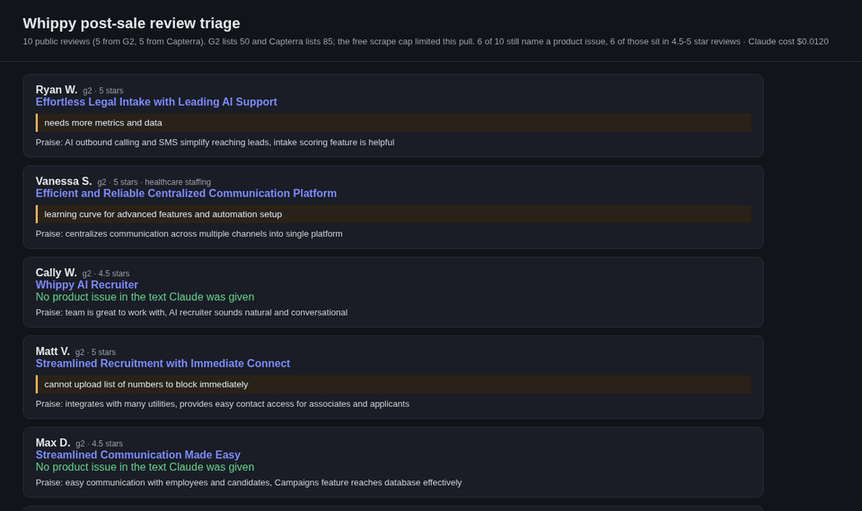

Built by Gursimar Singh, Nov 2026, on real public data

I pulled 10 public reviews, 5 from G2 and 5 from Capterra. G2 lists 50 and Capterra lists 85, but the free scrape cap stopped at 5 each. Even in this 4.5 and 5 star set, 6 of the 10 still name a product issue, including a learning curve on automations, no bulk blocked-number upload, and a campaign that sent 10,000 plus messages when the contact list was smaller.
What I'd improve next: pull the full G2 and Capterra sets and group issues by onboarding versus missing features, so a post-sale engineer can turn them into playbooks.